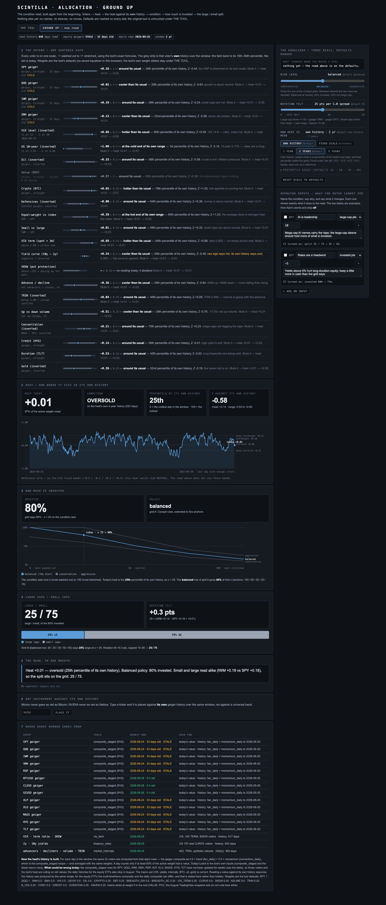
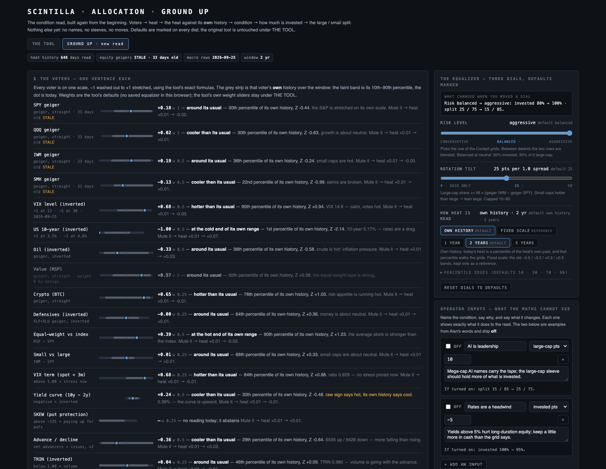
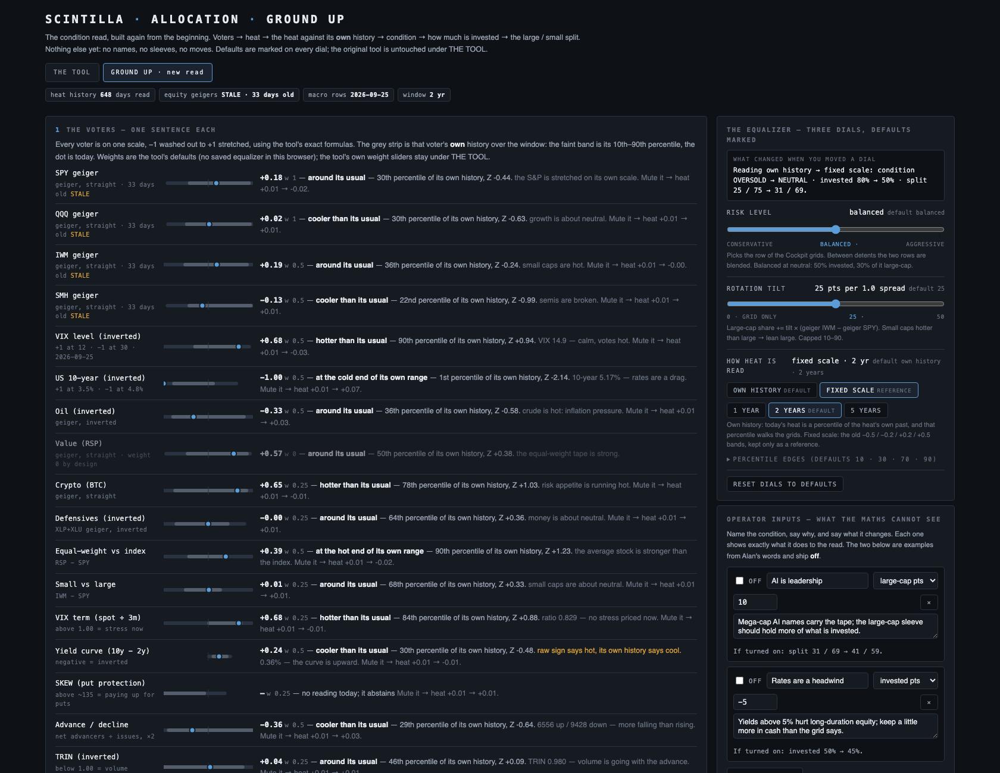
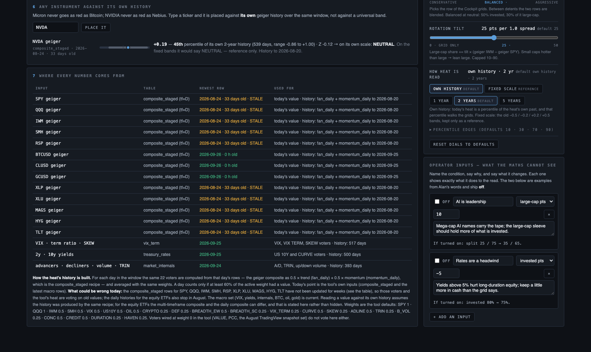
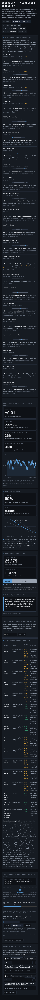

Deliverable · 26 Sep 2026 · branch allocation/ground-up-20260926 · repo aharveyrianhard-stack/scintilla-allocation
A new sub-tab inside the allocation tool. The old tool is untouched; it now has a two-tab strip under its title, THE TOOL and GROUND UP. The new tab builds the condition read from the beginning, in the order you asked for: the one-sentence voters first, then the heat, then the heat placed against its own history, then how much is invested, then the large / small split. Nothing after that yet: no names, no sleeves, no moves, no knockout.
On the right (or below on a phone): the equalizer with three dials and a line that says what changed when you moved one, and the operator inputs, the conditions the maths cannot see.
The same heat on the old fixed bands would read neutral, and the tool's own Brief says exactly that ("Heat reads +0.01 — neutral"). The difference is the whole point of your correction: this heat has spent most of the last two years above +0.01 (its mean is +0.14, its range −0.52 to +0.60), so +0.01 is on the cool side of its own normal. Whether that should move 80% of the money is a policy question, and it is on the dials, not baked in.

Heat = Σ (voter value × weight) ÷ Σ weight, over the voters that have a value today. A voter with no reading abstains; it never votes zero. This is the tool's formula, unchanged. Weights: SPY 1 · QQQ 1 · IWM 0.5 · SMH 0.5 · VIX 0.5 · US 10Y 0.5 · OIL 0.5 · CRYPTO 0.25 · DEF 0.25 · equal-weight-vs-index 0.5 · small-vs-large 0.25 · VIX term 0.25 · curve 0.5 · SKEW 0.25 · A/D 0.5 · TRIN 0.25 · up/down volume 0.25 · concentration 0.5 · credit 0.5 · duration 0.25 · gold 0.25. VALUE and PUT/CALL are wired at 0, as in the tool.
No universal bands. The page rebuilds the heat for every day in the window from the same voters and the same weights, then places today's heat as a percentile of that series and reports a Z. The condition word comes from the percentile: at or below the 10th = deep oversold, at or below the 30th = oversold, 70th and above = overbought, 90th and above = deep overbought, otherwise neutral. Those four edges are editable. The old −0.5 / −0.2 / +0.2 / +0.5 bands are shown only as a labelled reference, and the dial can switch to them so you can see what they would do.
The condition axis runs 0 (most washed out) to 100 (most stretched). Under the default reading, today's percentile is the position on that axis. Grid A is read at that position by straight-line interpolation between five anchors at 0 / 25 / 50 / 75 / 100:
| Row | 0 (−1) | 25 (oversold) | 50 (neutral) | 75 (overbought) | 100 (+1) |
|---|---|---|---|---|---|
| Conservative | 75* | 60 | 40 | 20 | 10* |
| Balanced | 100 | 80 | 50 | 30 | 15 |
| Aggressive | 100* | 100 | 70 | 40 | 25* |
The middle three columns are your Cockpit. Balanced's two ends are the MODEL's (100 at −1, 15 at +1). The four starred numbers are mine, chosen to sit outside the Cockpit rows in the same proportion; they are defaults, not findings. The risk dial is continuous: between two rows the page blends them, so a setting of 1.5 is half Balanced, half Aggressive.
Grid B is read the same way (Cockpit rows in the middle, extended to the ends: Conservative 40/50/60/75/85, Balanced 20/25/30/50/60, Aggressive 10/15/20/40/50). Then the tilt: large-cap share += 25 × (geiger IWM − geiger SPY). Small caps hotter than large pushes toward large, and the other way round. The result is capped between 10 and 90. Today the spread is +0.01, so the tilt is +0.3 points and the split stays on the grid.
Each input has a name, a reason, a target (large-cap points, invested points, or heat units) and an amount. It is applied after the grids and inside the caps, and the row shows what it would do before you turn it on ("If turned on: split 25 / 75 → 35 / 65"). Two examples from your words are pre-filled and off: "AI is leadership" (+10 large) and "Rates are a headwind" (−5 invested). They are placeholders for you to rename, reprice or delete.




| Input | Table (Supabase, anon read, same as the tool) | Newest row on 26 Sep | History used |
|---|---|---|---|
| SPY QQQ IWM SMH RSP XLP XLU MAGS HYG TLT geigers | composite_staged, tf = D | 2026-08-24 · 33 days old · STALE | fan_daily + momentum_daily, which stop on 2026-08-20 for these |
| BTCUSD CLUSD GCUSD geigers | composite_staged, tf = D | 2026-09-26 · fresh | fan_daily + momentum_daily to 2026-09-25 |
| VIX · VIX/3m ratio · SKEW | vix_term | 2026-09-25 | 517 days in the 2-year window (SKEW is null on the newest row, so that voter abstains today) |
| 2y · 10y | treasury_rates | 2026-09-25 | 500 days |
| advancers · decliners · volumes · TRIN | market_internals | 2026-09-24 | 393 days |
The heat history is rebuilt from those daily tables: for each day the geiger composite is 0.5 × trend (fan_daily) + 0.5 × momentum (momentum_daily), which is the composite_staged recipe (checked on BTCUSD: 0.5 × 0.8865 + 0.5 × 0.4171 = 0.6518, the stored composite). A day is kept only when at least 60% of the active weight had a value; 522 such days sit in the 2-year window, the last on 2026-08-20.
node --test tests/ in the repo: 31 tests, 31 pass. They cover the five-anchor interpolation, both grids at the Cockpit's points and the blend between rows, the rotation tilt and its 10–90 cap, the percentile and Z (including a flat series), the condition words on both scales, every voter formula against the tool's, abstention, the coverage gate on the reconstructed history, the day builder, the operator inputs, the whole read end to end, and the "what changed" sentence.
ground-up.html — the page.ground-up-math.mjs — the arithmetic, imported by both the page and the tests.tests/ground-up.test.mjs — the tests.index.html — three lines added under the title: the tab strip. Nothing else.deliverables/20260926/allocation-ground-up/ — this document and the screenshots.